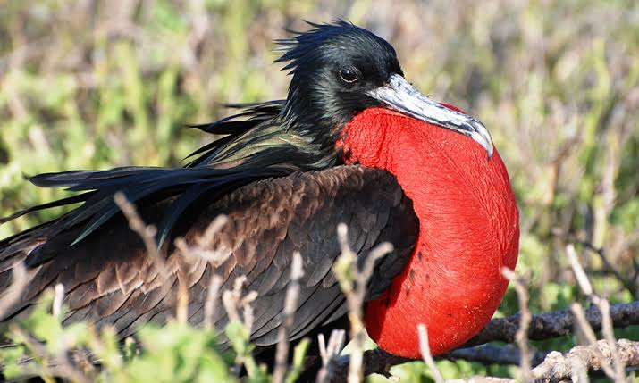

Frigate
Birds
Frigatebirds are a family of seabirds called Fregatidae which are found across all tropical and subtropical oceans. The five extant species are classified in a single genus, Fregata. All have predominantly black plumage, long, deeply forked tails and long hooked bills.
Scientific name: Fregatidae
Family: Fregatidae; Degland & Gerbe, 1867
Phylum: Chordata
Order: Gannets
Mass: Great frigatebird: 1.4 kg, Christmas frigatebird: 1.6 kg, Lesser frigatebird: 800 g, Ascension frigatebird: 1.6 kg
Length: Great frigatebird: 85 – 100 cm, Christmas frigatebird: 89 – 100 cm
Frigate bird, also called man-o’-war bird, any member of five species of large seabirds constituting the family Fregatidae (order Pelecaniformes or Suliformes). Frigate birds are about the size of a chicken and have extremely long, slender wings, the span of
which may reach to about 2.3 metres (nearly 8 feet), and a long, deeply forked tail. In general, adult males are all black, and adult females are marked with white below.
The birds have a bare-skinned throat pouch, which in courting males becomes bright red and is inflated, for display purposes, to the size of a person’s head. Other distinguishing characteristics are the almost helpless tiny feet with four webbed toes, and a long hooked bill that is used in attacking and robbing other seabirds of their fish.
The frigate bird is perhaps the most aerial of all birds except the swift and alights only to sleep or to tend its nest. The
adult, with insufficient preening oil to waterproof its plumage, never willingly alights on the water, but it is unbelievably
fast and skillful in the air, soaring effortlessly and often diving to recover falling fish dropped aloft by panic-stricken boobies or other seabirds. It also courses low over the water to seize fish.
Found throughout the world along tropical and semitropical coasts and islands, the frigate bird usually keeps within 100 miles (160 km) of land, to which it must return to roost. It breeds in crowded colonies on islands. Both parents incubate the single white egg.
Biology of Frigrate
Etymology
The term Frigate Bird itself was used in 1738 by the English naturalist and illustrator Eleazar Albin in his A Natural History of the Birds. The book included an illustration of the male bird showing the red gular pouch.
Like the genus name, the English term is derived from the French mariners' name for the bird la frégate—a frigate or fast warship. The etymology was mentioned by French naturalist Jean-Baptiste Du Tertre when describing the bird in 1667.
Christopher Columbus encountered frigatebirds when passing the Cape Verde Islands on his first voyage across the Atlantic in 1492. In his journal entry for 29 September he used the word rabiforçado, modern Spanish rabihorcado or forktail.
In the Caribbean frigatebirds were called Man-of-War birds by English mariners. This name was used by the English explorer William Dampier in his book An Account of a New Voyage Around the World published in 1697:
Distribution and habitat
Frigatebirds are found over tropical oceans, and ride warm updrafts under cumulus clouds. Their range coincides with availability of food such as flying fish, and with the trade winds, which provide the windy conditions that facilitate their flying.
They are rare vagrants to temperate regions and not found in polar latitudes. Adults are generally sedentary, remaining near the islands where they breed.
However, male frigatebirds have been recorded dispersing great distances after departing a breeding colony—one male great frigatebird relocated from Europa Island in the Mozambique Channel to the Maldives 4,400 km (2,700 mi) away, and a male
magnificent frigatebird flew 1,400 km (870 mi) from French Guiana to Trinidad. Great frigatebirds marked with wing tags on Tern Island in the French Frigate Shoals were found to regularly travel the 873 km (542 mi) to Johnston Atoll, although one was
reported in Quezon City in the Philippines. Genetic testing seems to indicate that the species has fidelity to their site of hatching despite their high mobility. Young birds may disperse far and wide, with distances of up to 6,000 km (3,700 mi) recorded.
Breeding behaviour
Frigatebirds typically breed on remote oceanic islands, generally in colonies of up to 5000 birds. Within these colonies, they most often nest in groups of 10 to 30 (or rarely 100) individuals. Breeding can occur at any time of year, often prompted by commencement of the dry season or plentiful food.
Frigatebirds have the most elaborate mating displays of all seabirds. The male birds take up residence in the colony in groups of up to thirty individuals.
They display to females flying overhead by pointing their bills upwards, inflating their red throat pouches and vibrating their outstretched wings, showing the lighter wing undersurfaces in the process. They produce a drumming sound by vibrating their bills together and sometimes give a whistling call.
The female descends to join a male she has chosen and allows him to take her bill in his. The pair also engages in mutual "head-snaking".
Feeding
Frigatebirds' feeding habits are pelagic, and they may forage up to 500 km (310 mi) from land. They do not land on the water but snatch prey from the ocean surface using their long, hooked bills.
They mainly catch small fish such as flying fish, particularly the genera Exocoetus and Cypselurus, that are driven to the surface by predators such as tuna and dolphinfish, but they will also eat cephalopods, particularly squid.
Menhaden of the genus Brevoortia can be an important prey item where common, and jellyfish and larger plankton are also eaten. Frigatebirds have learned to follow fishing vessels and take fish from holding areas.
Conversely tuna fishermen fish in areas where they catch sight of frigatebirds due to their association with large marine predators.
Frigatebirds also at times prey directly on eggs and young of other seabirds, including boobies, petrels, shearwaters and terns, in particular the sooty tern.
Frigatebirds will rob other seabirds such as boobies, particularly the red-footed booby, tropicbirds, shearwaters, petrels, terns, gulls and even ospreys of their catch, using their speed and manoeuvrability to outrun and harass their victims until they regurgitate their stomach contents.
Hunting
In Nauru, catching frigatebirds was an important tradition still practised to some degree. Donald W. Buden writes: "Birds typically are captured by slinging the weighted end of a coil of line in front of an approaching bird attracted to previously
captured birds used as decoys. In a successful toss, the line becomes entangled about the bird's wing and bringing [sic] it to ground." Marine birds including frigatebirds were once harvested for food on Christmas Island but this practice ceased in the late 1970s.
Eggs and young of magnificent frigatebirds were taken and eaten in the Caribbean. Great frigatebirds were eaten in the Hawaiian Islands and their feathers used for decoration.